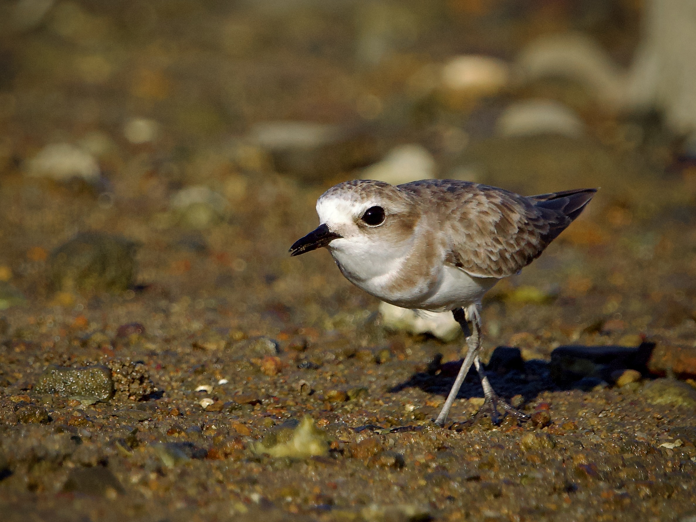
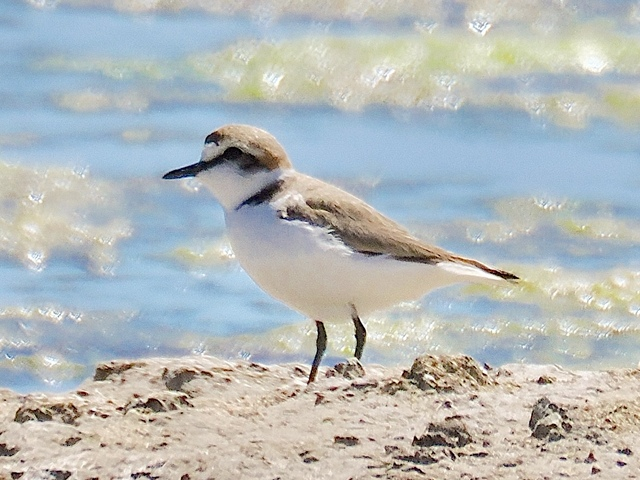

Kentish Plover
Anarhynchus alexandrinus
Order: Charadriiformes
Family: Charadriidae

A tiny plover that moves impressively fast on sand. Has greyish legs. Female is mostly brown with a brown mask, brown shoulder patch and slight rufous on the cheek.

Breeding male is rufous on the back of the head; has a black mask and shoulder patch. Unfortunately, it does not breed in the UK anymore despite the name, and is now a rare migrant.
Watching tips
Lie low aronud where it forages for a while, and it might come running at you.